Publications
Preprints · Papers · Patents · Books · Book chapters · Academic dissertations · Popular science
Preprints
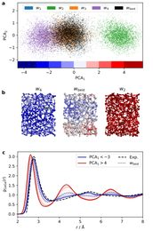
© the authors (arXiv) 2. M. Kellner, T. Hansen, T. Bligaard, K.W. Jacobsen, M. Ceriotti: Errors that matter: Uncertainty-aware universal machine-learning potentials calibrated on experiments, arXiv preprint (2026) arXiv:2604.24607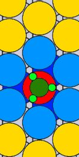
© the authors (arXiv) 1. M.H. Hansen, J.A. Garrido Torres, P.C. Jennings, Z. Wang, J.R. Boes, O.G. Mamun, T. Bligaard: An atomistic machine learning package for surface science and catalysis (CatLearn), arXiv preprint (2019) arXiv:1904.00904
Papers
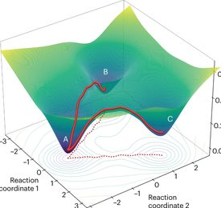
© Springer Nature 120. T. Bligaard, B.T. Hinrichsen: Towards a chemistry genome, Nature Computational Science 6, 1051–1052 (2026) doi:10.1038/s43588-026-01059-w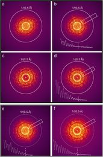
© Elsevier 119. I. Biran, F. Dam, S.K. Kaptain, R.B. Villoro, M. Wirix, C. Kisielowski, P.C.K. Vesborg, J. Kibsgaard, T. Bligaard, C.D. Damsgaard, J.R. Jinschek, S. Helveg: Open gas-cell transmission electron microscopy at 0.5Å information limit, Ultramicroscopy 282, 114328 (2026) doi:10.1016/j.ultramic.2026.114328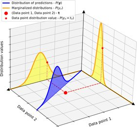
© American Physical Society 118. T. Hansen, J.J. Mortensen, T. Bligaard, K.W. Jacobsen: Uncertainty-aware electronic density functional distributions, Physical Review B 112, 7, 075412 (2025) doi:10.1103/yhly-wxhv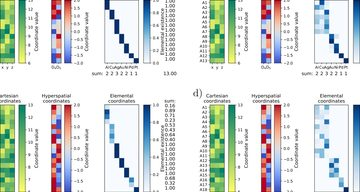
© the authors, CC BY-NC-ND 4.0 117. C. Larsen, S. Kaappa, A.L. Vishart, T. Bligaard, K.W. Jacobsen: Global atomic structure optimization through machine learning-enabled barrier circumvention in extra dimensions, npj Computational Materials 11, 1, 222 (2025) doi:10.1038/s41524-025-01656-9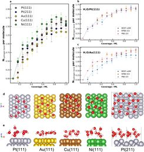
© AIP Publishing 116. M.L. Xu, S.H. Liu, S. Vijay, T. Bligaard, G. Kastlunger: Benchmarking water adsorption on metal surfaces with ab initio molecular dynamics, Journal of Chemical Physics 160, 24, 244707 (2024) doi:10.1063/5.0205552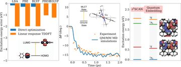
© the authors, CC BY 4.0 115. J.J. Mortensen, A.H. Larsen, M. Kuisma, A.V. Ivanov, A. Taghizadeh et al. (47 authors): GPAW: An open Python package for electronic structure calculations, Journal of Chemical Physics 160, 9, 092503 (2024) doi:10.1063/5.0182685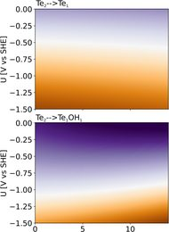
© American Chemical Society 114. P.D. Pedersen, M.M. Melander, T. Bligaard, T. Vegge, K. Honkala, H.A. Hansen: Grand canonical DFT investigation of the CO2RR and HER reaction mechanisms on MoTe₂ edges, Journal of Physical Chemistry C 127, 38, 18855–18864 (2023) doi:10.1021/acs.jpcc.3c04474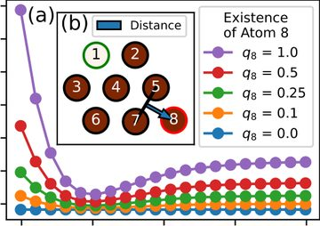
© American Physical Society 113. C. Larsen, S. Kaappa, A.L. Vishart, T. Bligaard, K.W. Jacobsen: Machine-learning-enabled optimization of atomic structures using atoms with fractional existence, Physical Review B 107, 21, 214101 (2023) doi:10.1103/physrevb.107.214101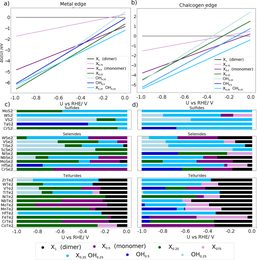
© American Chemical Society 112. P.D. Pedersen, T. Vegge, T. Bligaard, H.A. Hansen: Trends in CO₂ reduction on transition metal dichalcogenide edges, ACS Catalysis 13, 4, 2341–2350 (2023) doi:10.1021/acscatal.2c04825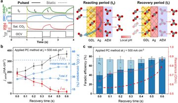
© the authors, CC BY 4.0 111. Q.C. Xu, A. Xu, S. Garg, A.B. Moss, I. Chorkendorff, T. Bligaard, B. Seger: Enriching surface-accessible CO₂ in the zero-gap anion-exchange-membrane-based CO₂ electrolyzer, Angewandte Chemie Int. Ed. 62, e202214383 (2023) doi:10.1002/anie.202214383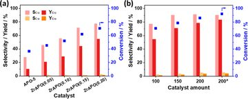
© the authors, CC BY 4.0 110. W. Fang, S. Liu, L. Schill, M. Kubus, T. Bligaard, A. Riisager: On the role of Zr to facilitate the synthesis of diesel and jet fuel range intermediates from biomass-derived carbonyl compounds over aluminum phosphate, Applied Catalysis B-Environmental 320, 121936 (2023) doi:10.1016/j.apcatb.2022.121936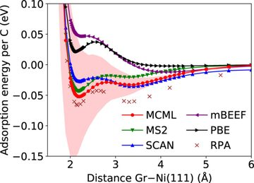
© Wiley 109. K. Brown, Y. Maimaiti, K. Trepte, T. Bligaard, J. Voss: MCML: Combining physical constraints with experimental data for a multi-purpose meta-generalized gradient approximation, Journal of Computational Chemistry 42, 28, 2004–2013 (2021) doi:10.1002/jcc.26732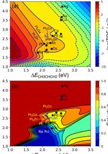
© American Chemical Society 108. T. Wang, X. Cui, K.T. Winther, F. Abild-Pedersen, T. Bligaard, J.K. Nørskov: Theory-Aided Discovery of Metallic Catalysts for Selective Propane Dehydrogenation to Propylene, ACS Catalysis 11, 10, 6290–6297 (2021) doi:10.1021/acscatal.0c05711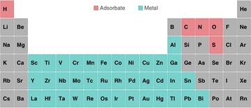
© the authors, CC BY 4.0 107. O. Mamun, K.T. Winther, J.R. Boes, T. Bligaard: A Bayesian framework for adsorption energy prediction on bimetallic alloy catalysts, NPJ Computational Materials 6, 1, 177 (2020) doi:10.1038/s41524-020-00447-8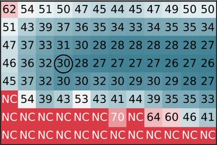
© AIP Publishing 106. E.G. del Rio, S. Kaappa, J.A.G. Torres, T. Bligaard, K.W. Jacobsen: Machine learning with bond information for local structure optimizations in surface science, Journal of Chemical Physics 153, 23, 234116 (2020) doi:10.1063/5.0033778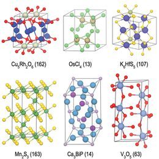
© the authors, CC BY 3.0 105. J.H. Montoya, K.T. Winther, R.A. Flores, T. Bligaard, J.S. Hummelshøj, M. Aykol: Autonomous intelligent agents for accelerated materials discovery, Chemical Science 11, 32, 8517–8532 (2020) doi:10.1039/d0sc01101k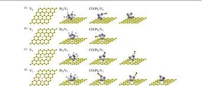
© the authors, CC BY 4.0 104. Y. Hamamoto, S.A. Wella, K. Inagaki, F. Abild-Pedersen, T. Bligaard, I. Hamada, Y. Morikawa: Enhanced CO tolerance of Pt clusters supported on graphene with lattice vacancies, Phys. Rev. B 102, 7, 075408 (2020) doi:10.1103/physrevb.102.075408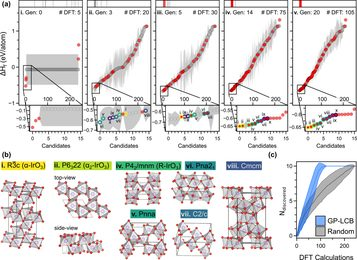
© American Chemical Society 103. R.A. Flores, C. Paolucci, K.T. Winther, A. Jain, J.A.G. Torres, M. Aykol, J. Montoya, J.K. Nørskov, M. Bajdich, T. Bligaard: Active Learning Accelerated Discovery of Stable Iridium Oxide Polymorphs for the Oxygen Evolution Reaction, Chemistry of Materials 32, 13, 5854–5863 (2020) doi:10.1021/acs.chemmater.0c01894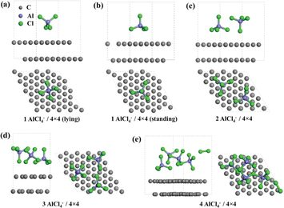
© Royal Society of Chemistry 102. J. Li, Q.H. Liu, R.A. Flores, J. Lemmon, T. Bligaard: DFT simulation of the X-ray diffraction pattern of aluminum-ion-intercalated graphite used as the cathode material of the aluminum-ion battery, Phys. Chem. Chem. Phys. 22, 10, 5969–5975 (2020) doi:10.1039/c9cp06394c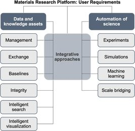
© Elsevier 101. M. Aykol, J.S. Hummelshøj, A. Anapolsky, K. Aoyagi, M.Z. Bazant, T. Bligaard et al (44 authors): The Materials Research Platform: Defining the requirements from user stories, Matter 1, 6, 1433–1438 (2019) doi:10.1016/j.matt.2019.10.024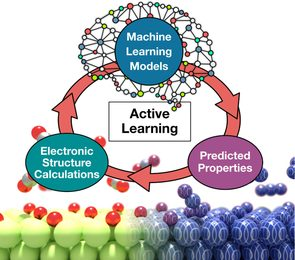
© Wiley 100. P.S. Lamoureux, K.T. Winther, J.A.G. Torres, V. Streibel, M. Zhao, M. Bajdich, F. Abild-Pedersen, T. Bligaard: Machine Learning for Computational Heterogeneous Catalysis, ChemCatChem 11, 16, 3581–3601 (2019) doi:10.1002/cctc.201900595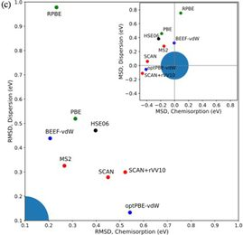
© American Physical Society 99. S.H. Sharada, R.K.B. Karlsson, Y. Maimaiti, J. Voss, T. Bligaard: Adsorption on transition metal surfaces: Transferability and accuracy of DFT using the ADS41 dataset, Physical Review B 100, 3, 035439 (2019) doi:10.1103/physrevb.100.035439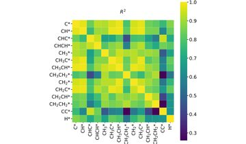
© Elsevier 98. M. H. Hansen, J.K. Nørskov, T. Bligaard: First principles micro-kinetic model of catalytic non-oxidative dehydrogenation of ethane over close-packed metallic facets, Journal of Catalysis 374, 161–170 (2019) doi:10.1016/j.jcat.2019.03.034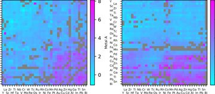
© the authors, CC BY 4.0 97. O. Mamun, K.T. Winther, J.R. Boes, T. Bligaard: High-throughput calculations of catalytic properties of bimetallic alloy surfaces, Scientific Data 6, 76 (2019) doi:10.1038/s41597-019-0080-z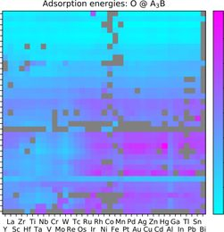
© the authors, CC BY 4.0 96. K.T. Winther, M.J. Hoffmann, J.R. Boes, O.G. Mamun, M. Bajdich, T. Bligaard: Catalysis-hub.org an open electronic structure database for surface reactions, Scientific Data 6, 75 (2019) doi:10.1038/s41597-019-0081-y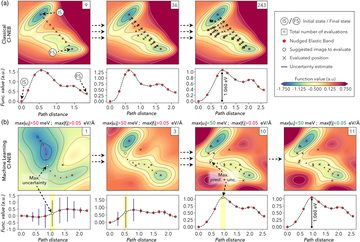
© American Physical Society 95. J.A.G. Torres, P.C. Jennings, M.H. Hansen, J.R. Boes, T. Bligaard: Low-scaling algorithm for nudged elastic band calculations using a surrogate machine learning model, Physical Review Letters 122, 15, 156001 (2019) doi:10.1103/physrevlett.122.156001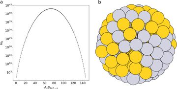
© the authors, CC BY 4.0 94. P.C. Jennings, S. Lysgaard, J.S. Hummelshøj, T. Vegge, T. Bligaard: Genetic algorithms for computational materials discovery accelerated by machine learning, NPJ Computational Materials 5, 46 (2019) doi:10.1038/s41524-019-0181-4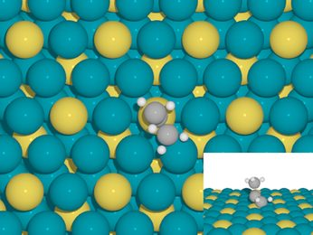
© American Chemical Society 93. J. Boes, O.G. Mamun, K. Winther, T. Bligaard: Graph theory approach to high-throughput surface adsorption structure generation, Journal of Physical Chemistry A 123, 11, 2281–2285 (2019) doi:10.1021/acs.jpca.9b00311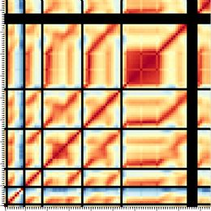
© American Physical Society 92. A. Jain, T. Bligaard: Atomic-position independent descriptor for machine learning of material properties, Physical Review B 98, 21 214112 (2018) doi:10.1103/physrevb.98.214112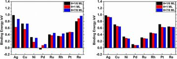
© Elsevier 91. L.N. Zhang, L.J. Qiao, T. Bligaard, Y.J. Su: A first-principle study of H adsorption and absorption under the influence of coverage, Applied Surface Science 457, 280–286 (2018) doi:10.1016/j.apsusc.2018.06.257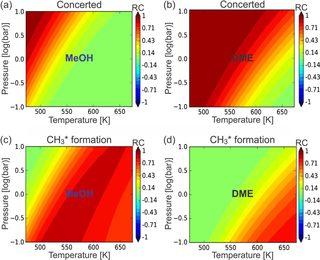
© Elsevier 90. K. de Wispelaere, J.S. Martinez-Espin, M.J. Hoffmann, S. Svelle, U. Olsbye, T. Bligaard: Understanding zeolite-catalyzed benzene methylation reactions by methanol and dimethyl ether at operating conditions from first principle microkinetic modeling and experiments, Catalysis Today 312, 35–43 (2018) doi:10.1016/j.cattod.2018.02.042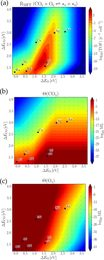
© American Chemical Society 89. M.J. Hoffmann, T. Bligaard: A lattice kinetic Monte Carlo solver for first-principles microkinetic trend studies, Journal of Chemical Theory and Computation 14, 1583–1593 (2018) doi:10.1021/acs.jctc.7b00683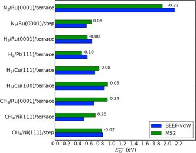
© American Chemical Society 88. S.M. Sharada, T. Bligaard, A.C. Luntz, G.J. Kroes, J.K. Norskov: SBH10: A benchmark database of barrier heights on transition metal surfaces, Journal of Physical Chemistry C 121, 19807–19815 (2017) doi:10.1021/acs.jpcc.7b05677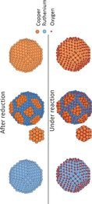
© Wiley 87. D. Chakraborty, C.D. Damsgaard, H. Silva, C. Conradsen, J.L. Olsen, H.W.P. Carvalho, B. Mutz, T. Bligaard, M.J. Hoffmann, J.D. Grunwaldt, F. Studt, I. Chorkendorff: Bottom-up design of a copper-ruthenium nanoparticulate catalyst for low-temperature ammonia oxidation, Angewandte Chemie-International Edition 56, 8711–8715 (2017) doi:10.1002/anie.201703468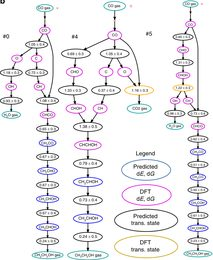
© the authors, CC BY 4.0 86. Z. Ulissi, A.J. Medford, T. Bligaard, J.K. Nørskov: To address surface reaction network complexity using scaling relations, machine learning, and DFT calculations, Nature Communications, 8, 14621 (2017) doi:10.1038/ncomms14621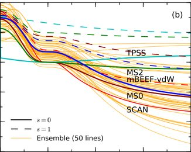
© American Physical Society 85. K.T. Lundgaard, J. Wellendorff, J. Voss, K.W. Jacobsen, T. Bligaard: mBEEF-vdW: Robust fitting of error estimation density functionals, Physical Review B 93, 235162 (2016) doi:10.1103/physrevb.93.235162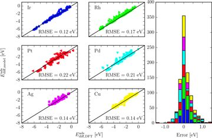
© American Chemical Society 84. M.J. Hoffmann, A.J. Medford, T. Bligaard: Framework for Scalable Adsorbate-adsorbate Interaction Models, Journal of Physical Chemistry C 120, 13087–13094 (2016) doi:10.1021/acs.jpcc.6b03375- 83. M. Pruski, A.D. Sadow, I.I. Slowing, C.L. Marshall, P. Stair, J. Rodriguez, A. Harris, G.A. Somorjai, J. Biener, C. Matranga, C.J. Wang, J.A. Schaidle, G.T. Beckham, D.A. Ruddy, T. Deutsch, S.M. Alia, C. Narula, S. Overbury, T. Toops, R.M. Bullock, C.H.F. Peden, Y. Wang, M.D. Allendorf, J. Nørskov, T. Bligaard: Virtual Special Issue on Catalysis at the US Department of Energy’s National Laboratories, ACS Catalysis 6, 3227–3235 (2016) doi:10.1021/acscatal.6b00823
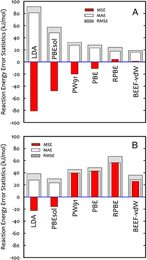
© American Chemical Society 82. T. Bligaard, R.M. Bullock, C.T. Campbell, J.G.G. Chen, B.C. Gates, R.J. Gorte, C.W. Jones, W.D. Jones, J.R. Kitchin, S.L. Scott: Toward Benchmarking in Catalysis Science: Best Practices, Challenges, and Opportunities, ACS Catalysis 6, 2590–2602 (2016) doi:10.1021/acscatal.6b00183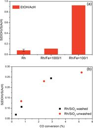
© American Chemical Society 81. N.Y. Yang, A.J. Medford, X.Y. Liu, F. Studt, T. Bligaard, S.F. Bent, J.K. Nørskov: Intrinsic Selectivity and Structure Sensitivity of Rhodium Catalysts for C2+ Oxygenate Production, Journal of the American Chemical Society 138, 3705–3714 (2016) doi:10.1021/jacs.5b12087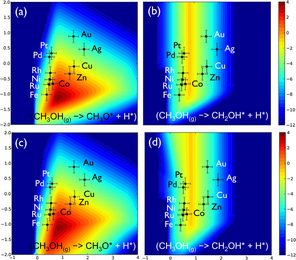
© Elsevier 80. H.J. Li, A.C. Lausche, A.A. Peterson, H.A. Hansen, F. Studt, T. Bligaard: Using microkinetic analysis to search for novel anhydrous formaldehyde production catalysts, Surface Science 641, 105–111 (2015) doi:10.1016/j.susc.2015.04.028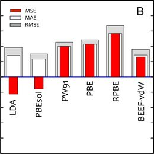
© Elsevier 79. J. Wellendorff, T.L. Silbaugh, D. Garcia-Pintos, J.K. Nørskov, T. Bligaard, F.Studt, C.T. Campbell: A benchmark database for adsorption bond energies to transition metal surfaces and comparison to selected DFT functionals, Surface Science 640, 36–44 (2015) doi:10.1016/j.susc.2015.03.023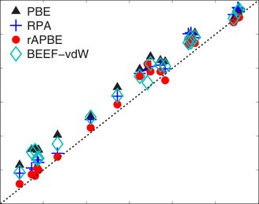
© American Physical Society 78. T.S. Jauho, T. Olsen, T. Bligaard, K.S. Thygesen: Improved description of metal oxide stability: Beyond the random phase approximation with renormalized kernels, Physical Review B 92, 115140 (2015) doi:10.1103/physrevb.92.115140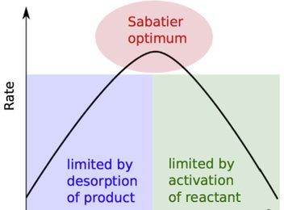
© Elsevier 77. A.J. Medford, A. Vojvodic, J.S. Hummelshøj, J. Voss, F. Abild-Pedersen, F. Studt, T. Bligaard, A. Nilsson, J.K. Nørskov: From the Sabatier principle to a predictive theory of transition-metal heterogeneous catalysis, Journal of Catalysis 328, 36–42 (2015) doi:10.1016/j.jcat.2014.12.033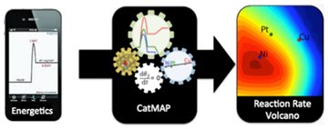
© Springer Nature 76. A.J. Medford, C. Shi, M.J. Hoffmann, A.C. Lausche, S.R. Fitzgibbon, T. Bligaard, J.K. Nørskov: CatMAP: A software package for descriptor-based microkinetic mapping of catalytic trends, Catalysis Letters 145, 794–807 (2015) doi:10.1007/s10562-015-1495-6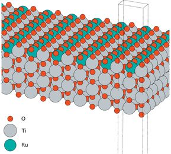
© Elsevier 75. R.K.B. Karlsson, H.A. Hansen, T. Bligaard, A. Cornell, L.G.M. Pettersson: Ti atoms in Ru0.3Ti0.7O2 mixed oxides form active and selective sites for electrochemical chlorine evolution, Electrochimica Acta 146, 733–740 (2014) doi:10.1016/j.electacta.2014.09.056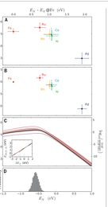
© AAAS 74. A.J. Medford, J. Wellendorff, A. Vojvodic, F. Studt, F. Abild-Pedersen, K.W. Jacobsen, T. Bligaard, J.K. Nørskov: Assessing the reliability of calculated catalytic ammonia synthesis rates, Science 345, 197–200 (2014) doi:10.1126/science.1253486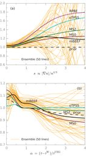
© AIP Publishing 73. J. Wellendorff, K.T. Lundgaard, K.W. Jacobsen, T. Bligaard: mBEEF: An accurate semi-local Bayesian error estimation density functional, J. Chem. Phys. 140, 144107 (2014) doi:10.1063/1.4870397© Elsevier 72. A. Vojvodic, A.J. Medford, F. Studt, F. Abild-Pedersen, T.S. Khan, T. Bligaard, J.K. Nørskov: Exploring the limits: A low-pressure, low-temperature Haber-Bosch process, Chemical Physics Letters 598, 108–112 (2014) doi:10.1016/j.cplett.2014.03.003© Springer Nature 71. V. Tripkovic, I. Cerri, T. Bligaard, J. Rossmeisl: The influence of particle shape and size on the activity of platinum nanoparticles for oxygen reduction reaction: A density functional theory study, Catalysis Letters 144, 380–388 (2014) doi:10.1007/s10562-013-1188-y© Springer Nature 70. H. Falsig, J. Shen, T.S. Khan, W. Guo, G. Jones, S. Dahl, T. Bligaard: On the structure sensitivity of direct NO decomposition over low-index transition metal facets, Topics in Catalysis 57, 80–88 (2014) doi:10.1007/s11244-013-0164-5© Springer Nature 69. S. Lysgaard, D.D. Landis, T. Bligaard, T. Vegge: Genetic algorithm procreation operators for alloy nanoparticle catalysts, Topics in Catalysis 57, 33–39 (2014) doi:10.1007/s11244-013-0160-9© Royal Society of Chemistry 68. M.H. Tang, C. Hahn, A.J. Klobuchar, J.W.D. Ng, J. Wellendorff, T. Bligaard, T.F. Jaramillo: Nickel-silver alloy electrocatalysts for hydrogen evolution and oxidation in an alkaline electrolyte, Phys Chem Chem Phys. 16, 19250–19257 (2014) doi:10.1039/c4cp01385a© the authors, CC BY 3.0 67. Y. Xu, A.C. Lausche, S.G. Wang, T.S. Khan, F. Abild-Pedersen, F. Studt, J.K. Nørskov, T. Bligaard: In silico search for novel methane steam reforming catalysts, New Journal of Physics 15, 125021 (2013) doi:10.1088/1367-2630/15/12/125021© Elsevier 66. A.C. Lausche, A.J. Medford, T.S. Khan, Y. Xu, T. Bligaard, F. Abild-Pedersen, J.K. Nørskov, F. Studt: On the effect of coverage-dependent adsorbate-adsorbate interactions for CO methanation on transition metal surfaces, Journal of Catalysis 307, 275–282 (2013) doi:10.1016/j.jcat.2013.08.002© Royal Society of Chemistry 65. J.G. Howalt, T. Bligaard, J. Rossmeisl, T. Vegge: DFT based study of transition metal nano-clusters for electrochemical NH₃ production, Phys. Chem. Chem. Phys. 15, 7785–7795 (2013) doi:10.1039/c3cp44641g© Wiley 64. J.K. Nørskov, T. Bligaard: The Catalyst Genome, Angewandte Chemie-International Edition 52, 776–777 (2013) doi:10.1002/anie.201208487© Royal Society of Chemistry 63. V. Tripkovic, I. Cerri, T. Nagami, T. Bligaard, J. Rossmeisl: Platinum redispersion on metal oxides in low temperature fuel cells, Phys. Chem. Chem. Phys. 15, 3279–3285 (2013) doi:10.1039/c2cp43248j© IEEE 62. D.D. Landis, J.S. Hummelshøj, S. Nestorov, J. Greeley, M. Dulak, T. Bligaard, J.K. Nørskov, K.W. Jacobsen: The Computational Materials Repository, Computing in Science & Engineering 14, 51–57 (2012) doi:10.1109/mcse.2012.16© Wiley 61. A. Toftelund, I.C. Man, H.A. Hansen, F. Abild-Pedersen, T. Bligaard, J. Rossmeisl, and F. Studt: Volcano Relations for Oxidation of Hydrogen Halides over Rutile Oxide Surfaces, ChemCatChem 4, 1856–1861 (2012) doi:10.1002/cctc.201200140© Elsevier 60. D.B. Rasmussen, T.V.W. Janssens, B. Temel, T. Bligaard, B. Hinnemann, S. Helveg, J. Sehested: The energies of formation and mobilities of Cu surface species on Cu and ZnO in methanol and water gas shift atmospheres studied by DFT, Journal of Catalysis 293, 205–214 (2012) doi:10.1016/j.jcat.2012.07.001© American Physical Society 59. J. Wellendorff, K.T. Lundgaard, A. Møgelhøj, V. Petzold, D.D. Landis, J.K. Nørskov, T. Bligaard, K.W. Jacobsen: Density functionals for surface science: Exchange-correlation model development with Bayesian error estimation, Phys. Rev. B 85, 235149 (2012) doi:10.1103/physrevb.85.235149© Springer Nature 58. V. Petzold, T. Bligaard, K.W. Jacobsen: Construction of new electronic density functionals with error estimation through fitting, Topics in Catalysis 55, 402–417 (2012) doi:10.1007/s11244-012-9801-7© Elsevier 57. D.E. Doronkin, T.S. Khan, T. Bligaard, S. Fogel, P. Gabrielsson, S. Dahl: Sulfur poisoning and regeneration of the Ag/gamma-Al₂O₃ catalyst for H₂-assisted SCR of NO_(x) by ammonia, Applied Catalysis B: Env. 117–118, 49–58 (2012) doi:10.1016/j.apcatb.2012.01.002© Elsevier 56. D.E. Doronkin, S. Fogel, S. Tamm, L. Olsson, T.S. Khan, T. Bligaard, P. Gabrielsson, S. Dahl: Study of the "Fast SCR"-like mechanism of H₂-assisted SCR of NO_(x) with ammonia over Ag/Al₂O₃, Applied Catalysis B: Env. 113–114, 228–236 (2012) doi:10.1016/j.apcatb.2011.11.042© Wiley 55. V. Tripkovic, F. Abild-Pedersen, F. Studt, I. Cerri, T. Nagami, T. Bligaard, J. Rossmeisl: Metal Oxide-Supported Platinum Overlayers as Proton-Exchange Membrane Fuel Cell Cathodes, ChemCatChem 4, 228–235 (2012) doi:10.1002/cctc.201100308© Wiley 54. J.S. Hummelshøj, F. Abild-Pedersen, F. Studt, T. Bligaard, J.K. Nørskov: CatApp: A Web Application for Surface Chemistry and Heterogeneous Catalysis, Angewandte Chemie-International Edition 51, 272 (2012) doi:10.1002/anie.201107947© Royal Society of Chemistry 53. E. Skulason, T. Bligaard, S. Gudmundsdottir, F. Studt, J. Rossmeisl, F. Abild-Pedersen, T. Vegge, H. Jónsson, J.K. Nørskov: A theoretical evaluation of possible transition metal electro-catalysts for N₂ reduction, Phys. Chem. Chem. Phys. 14, 1235–1245 (2012) doi:10.1039/c1cp22271f© Elsevier 52. G. Jones, F. Studt, F. Abild-Pedersen, J.K. Nørskov, T. Bligaard: Scaling relationships for adsorption energies of C₂ hydrocarbons on transition metal surfaces, Chemical Engineering Science 66, 6318–6323 (2011) doi:10.1016/j.ces.2011.02.050© Springer Nature 51. J. Wellendorff, T. Bligaard: On the Importance of Gradient-corrected Correlation for van der Waals Density Functionals, Topics in Catalysis 54, 1143–1150 (2011) doi:10.1007/s11244-011-9736-4© AIP Publishing 50. A. Vojvodic, F. Calle-Vallejo, W. Guo, S. Wang, A. Toftelund, F. Studt, J.I. Martinez, J. Shen, I.C. Man, J. Rossmeisl, T. Bligaard, J.K. Nørskov, F. Abild-Pedersen: On the behavior of Brønsted-Evans-Polanyi relations for transition metal oxides, Journal of Chemical Physics 134, 244509 (2011) doi:10.1063/1.3602323© Springer Nature 49. S. Wang, B. Temel, J. Shen, G. Jones, L.C. Grabow, F. Studt, T. Bligaard, F. Abild-Pedersen, C.H. Christensen, J.K. Nørskov: Universal Brønsted-Evans-Polanyi Relations for C-C, C-O, C-N, N-O, N-N, and O-O Dissociation Reactions, Catalysis Letters 141, 370–373 (2011) doi:10.1007/s10562-010-0477-y© National Academy of Sciences 48. J.K. Nørskov, F. Abild-Pedersen, F. Studt, and T. Bligaard: Density Functional Theory in Surface Chemistry and Catalysis, Proceedings of the National Academy of Sciences, 108, 937–943 (2011) doi:10.1073/pnas.1006652108© Wiley 47. L.C. Grabow, F. Studt, F. Abild-Pedersen, V. Petzold, J. Kleis, T. Bligaard, J.K. Nørskov: Descriptor-Based Analysis Applied to HCN Synthesis from NH₃ and CH₄, Angewandte Chemie-International Edition 50, 4601–4605 (2011) doi:10.1002/anie.201100353© Royal Society of Chemistry 46. T. Susi, G. Lanzani, A.G. Nasibulin, P. Ayala, T. Jiang, T. Bligaard, K. Laasonen, E.I. Kauppinen: Mechanism of the initial stages of nitrogen-doped single-walled carbon nanotube growth, Physical Chemistry Chemical Physics 13, 11303–11307 (2011) doi:10.1039/c1cp20454h© Royal Society of Chemistry 45. S. Wang, V. Petzold, V. Tripkovic, J. Kleis, J.G. Howalt, E. Skulason, E.M. Fernandez, B. Hvolbæk, G. Jones, A. Toftelund, H. Falsig, M. Björketun, F. Studt, F. Abild-Pedersen, J. Rossmeisl, J.K. Nørskov, T. Bligaard: Universal transition state scaling relations for (de)hydrogenation over transition metals, Physical Chemistry Chemical Physics 13, 20760–20765 (2011) doi:10.1039/c1cp20547a
© American Chemical Society 44. E. Skúlason, V. Tripkovic, M.E. Björketun, S. Gudmundsdóttir, G. Karlberg, J. Rossmeisl, T. Bligaard, H. Jónsson, and J.K. Nørskov: Modeling the Electrochemical Hydrogen Oxidation and Evolution Reactions on the Basis of Density Functional Theory Calculations, J. Phys. Chem. C 114, 22374 (2010) doi:10.1021/jp110913n© Wiley 43. G. Lanzani, T. Susi, P. Ayala, T. Jiang, A.G. Nasibulin, T. Bligaard, T. Pichler, K. Laasonen, and E.I. Kauppinen: Mechanism study of floating catalyst CVD synthesis of SWCNTs, Physica Status Solidi B 247, 2708–2712 (2010) doi:10.1002/pssb.201000226© American Chemical Society 42. E. Skúlason, V. Tripkovic, M.E. Björketun, S. Gudmundsdóttir, G. Karlberg, J. Rossmeisl, T. Bligaard, H. Jónsson, and J.K. Nørskov: Modeling the Electrochemical Hydrogen Oxidation and Evolution Reactions on the Basis of Density Functional Theory Calculations, J. Phys. Chem. C 114, 18182 (2010) doi:10.1021/jp1048887© Springer Nature 41. J. Wellendorff, A. Kelkkanen, J.J. Mortensen, B.I. Lundqvist, and T. Bligaard: RPBE-vdW description of benzene adsorption on Au(111), Topics in Catalysis 53, 378–383 (2010) doi:10.1007/s11244-010-9443-6© Royal Society of Chemistry 40. H.A. Hansen, I.C. Man, F. Studt, F. Abild-Pedersen, T. Bligaard, and J. Rossmeisl: Electrochemical Chlorine Evolution at Rutile Oxide (110) Surfaces, Physical Chemistry Chemical Physics 12, 283–290 (2010) doi:10.1039/b917459a© Wiley 39. F. Studt, F. Abild-Pedersen, H.A. Hansen, I.C. Man, J. Rossmeisl, and T. Bligaard: Volcano Relation for the Deacon Process over Transition-metal Oxides, ChemCatChem 2, 98–102 (2010) doi:10.1002/cctc.200900194© IOP Publishing 38. T.R. Munter, D.D. Landis, F. Abild-Pedersen, G. Jones, S. Wang, and T. Bligaard: Virtual Materials Design using Databases of Calculated Materials Properties, Computational Science & Discovery 2, 015006 (2009) doi:10.1088/1749-4699/2/1/015006© the authors, CC BY 3.0 37. J.S. Hummelshøj, D.D. Landis, J. Voss, T. Jiang, A. Tekin, N. Bork, M. Dulak, J.J. Mortensen, L. Adamska, J. Andersin, J.D. Baran, G.D. Barmparis, F. Bell, A.L. Bezanilla, J. Bjork, M.E. Björketun, F. Bleken, F. Buchter, M. Bürkle, P.D. Burton, B.B. Buus, A. Calborean, F. Calle-Vallejo, S. Casolo, B.D. Chandler, D.H. Chi, I. Czekaj, S. Datta, A. Datye, A. DeLaRiva, V. Despoja, S. Dobrin, M. Engelund, L. Ferrighi, P. Frondelius, Q. Fu, A. Fuentes, J. Fürst, A. García-Fuente, J. Gavnholt, R. Goeke, S. Gudmundsdottir, K.D. Hammond, H.A. Hansen, D. Hibbitts, E. Hobi Jr., J.G. Howalt, S.L. Hruby, A. Huth, L. Isaeva, J. Jelic, I.J.T. Jensen, K.A. Kacprzak, A. Kelkkanen, D. Kelsey, D.S. Kesanakurthi, J. Kleis, P.J. Klüpfel, I. Konstantinov, R. Korytar, P. Koskinen, C. Krishna, E. Kunkes, A.H. Larsen, J.M.G. Lastra, H. Lin, O. Lopez-Acevedo, M. Mantega, J.I. Martínez, I.N. Mesa, D.J. Mowbray, J.S.G. Mýrdal, Y. Natanzon, A. Nistor, T. Olsen, H. Park, L.S. Pedroza, V. Petzold, C. Plaisance, J.A. Rasmussen, H. Ren, M. Rizzi, A.S. Ronco, C. Rostgaard, S. Saadi, L.A. Salguero, E.J.G. Santos, A.L. Schoenhalz, J. Shen, M. Smedemand, O.J. Stausholm-Møller, M. Stibius, M. Strange, H.B. Su, B. Temel, A. Toftelund, V. Tripkovic, M. Vanin, V. Viswanathan, A. Vojvodic, S. Wang, J. Wellendorff, K.S. Thygesen, J. Rossmeisl, T. Bligaard, K.W. Jacobsen, J.K. Nørskov and T. Vegge: Density functional theory based screening of ternary alkali-transition metal borohydrides: A computational material design project, Journal of Chemical Physics 131, 014101 (2009) doi:10.1063/1.3148892© AAAS 36. J.K. Nørskov, T. Bligaard, and J. Kleis: Rate control and reaction engineering, Science 324, 1655 (2009) doi:10.1126/science.1174885© American Chemical Society 35. T. Jiang, D.J. Mowbray, S. Dobrin, H. Falsig, B. Hvolbæk, T. Bligaard, and J.K. Nørskov: Trends in CO oxidation rates for metal nanoparticles and close-packed, stepped, and kinked surfaces, Journal of Physical Chemistry C 113, 10548 (2009) doi:10.1021/jp811185g© Springer Nature 34. J.K. Nørskov, T. Bligaard, J. Rossmeisl, and C.H. Christensen: Towards the computational design of solid catalysts, Nature Chemistry 1, 37–46 (2009) doi:10.1038/nchem.121© Wiley 33. T. Bligaard: Linear energy relations and the computational design of selective hydrogenation/ dehydrogenation catalysts, Angewandte Chemie International Edition 48, 9782–9784 (2009) doi:10.1002/anie.200905141© The Electrochemical Society 32. J. Kleis, G. Jones, F. Abild-Pedersen, V. Tripkovic, T. Bligaard, and J. Rossmeisl: Trends for Methane Oxidation at Solid Oxide Fuel Cell conditions, Journal of the Electrochemical Society 156, B1447-B1456 (2009) doi:10.1149/1.3230622© Elsevier 31. G. Jones, J.G. Jakobsen, S.S. Shim, J. Kleis, M.P. Andersson, J. Rossmeisl, F. Abild-Pedersen, T. Bligaard, S. Helveg, B. Hinnemann, J.R. Rostrup-Nielsen, I. Chorkendorff, J. Sehested, and J.K. Nørskov: First Principles Calculations and Experimental Insight into Methane Steam Reforming over Transition Metal Catalysts, Journal of Catalysis 259, 147–160 (2008) doi:10.1016/j.jcat.2008.08.003© Royal Society of Chemistry 30. J.K. Nørskov, T. Bligaard, B. Hvolbæk, F. Abild-Pedersen, I. Chorkendorff, and C.H. Christensen: The nature of the active site in heterogeneous metal catalysis, Chemical Society Reviews 37, 2163–2171 (2008) doi:10.1039/b800260f© AAAS 29. F. Studt, F. Abild-Pedersen, T. Bligaard, R.Z. Sørensen, C.H. Christensen, and J.K. Nørskov: Identification of Non-Precious Metal Alloy Catalysts for Selective Hydrogenation of Acetylene, Science 320, 1320–1322 (2008) doi:10.1126/science.1156660© Elsevier 28. M.P. Andersson, F. Abild-Pedersen, I. Remediakis, T. Bligaard, G. Jones, J. Engbæk, O. Lytken, S. Horch, J.H. Nielsen, J. Sehested, J.R. Rostrup-Nielsen, J.K. Nørskov, and I. Chorkendorff: Structure Sensitivity of the Methanation Reaction: H₂ induced CO dissociation on nickel surfaces, Journal of Catalysis 255, 6–19 (2008) doi:10.1016/j.jcat.2007.12.016© IOP Publishing 27. G. Jones, T. Bligaard, F. Abild-Pedersen, and J.K. Nørskov: Using scaling relations to understand trends in the catalytic activity of transition metals, Journal of Physics: Condensed Matter 20, 064239 (2008) doi:10.1088/0953-8984/20/6/064239© Wiley 26. H. Falsig, B. Hvolbæk, I.S. Kristensen, T. Jiang, T. Bligaard, C.H. Christensen, and J.K. Nørskov: Trends in the catalytic CO oxidation activity of nanoparticles, Angewandte Chemie International Edition 47, 4835–4839 (2008) doi:10.1002/anie.200801479© Wiley 25. E.M. Fernández, P.G. Moses, A. Toftelund, H.A. Hansen, J.I. Martínez, F. Abild-Pedersen, J. Kleis, B. Hinnemann, J. Rossmeisl, T. Bligaard, and J.K. Nørskov: Scaling relationships for adsorption energies on transition metal oxide, sulfide and nitride surfaces, Angewandte Chemie International Edition 47, 4683–4686 (2008) doi:10.1002/anie.200705739© Royal Society of Chemistry 24. T.R. Munter, T. Bligaard, C.H. Christensen, and J.K. Nørskov: BEP-relations for N₂ dissociation over stepped transition metal and alloy surfaces, Physical Chemistry Chemical Physics 10, 5202–5206 (2008) doi:10.1039/b720021h© Wiley 23. F. Studt, F. Abild-Pedersen, T. Bligaard, R.Z. Sørensen, C.H. Christensen, and J.K. Nørskov: On the Role of Surface Modifications of Palladium Catalysts in the Selective Hydrogenation of Acetylene, Angewandte Chemie International Edition 47, 9299–9302 (2008) doi:10.1002/anie.200802844© De Gruyter 22. H. Falsig, T. Bligaard, C.H. Christensen, and J.K. Nørskov: Direct NO decomposition over stepped transition metal surfaces, Pure and Applied Chemistry 79, 1895–1903 (2007) doi:10.1351/pac200779111895© American Physical Society 21. G.S. Karlberg, T.F. Jaramillo, E. Skulason, J. Rossmeisl, T. Bligaard, and J.K. Nørskov: Cyclic voltammograms for H on Pt(111) and Pt(100) from first principles, Physical Review Letters 99, 126101 (2007) doi:10.1103/physrevlett.99.126101© Springer Nature 20. H. Falsig, T. Bligaard, J. Rass-Hansen, A.L. Kustov, C.H. Christensen, and J.K. Nørskov: Trends in catalytic NO decomposition over transition metal surfaces, Topics in Catalysis 45, 117–120 (2007) doi:10.1007/s11244-007-0250-7© Springer Nature 19. J. Sehested, K.E. Larsen, A.L. Kustov, A.M. Frey, T. Johannessen, T. Bligaard, M.P. Andersson, J.K. Nørskov, and C.H. Christensen: Discovery of technical methanation catalysts based on computational screening, Topics in Catalysis 45, 9–13 (2007) doi:10.1007/s11244-007-0232-9© American Physical Society 18. F. Abild-Pedersen, J. Greeley, F. Studt, J. Rossmeisl, T.R. Munter, P.G. Moses, E. Skulason, T. Bligaard, and J.K. Nørskov: Scaling properties of adsorption energies for hydrogen-containing molecules on transition metal surfaces, Physical Review Letters 99, 016105 (2007) doi:10.1103/physrevlett.99.016105© Springer Nature 17. T.V.W. Janssens, B.S. Clausen, B.H. Larsen, H. Falsig, C.H. Christensen, T. Bligaard, and J.K. Nørskov: Insights into the Reactivity of Supported Au Nanoparticles: Combining Theory and Experiments, Topics in Catalysis 44, 15–26 (2007) doi:10.1007/s11244-007-0335-3© Elsevier 16. T. Bligaard and J.K. Nørskov: Ligand effects in heterogeneous catalysis and electrochemistry, Electrochimica Acta 52, 5512–5516 (2007) doi:10.1016/j.electacta.2007.02.041© Royal Society of Chemistry 15. E. Skulason, G.S. Karlberg, J. Rossmeisl, T. Bligaard, J. Greeley, H. Jónsson, and J.K. Nørskov: Density functional theory calculations for the hydrogen evolution reaction in an electrochemical double layer on the Pt(111) electrode, Physical Chemistry Chemical Physics 9, 3241–3250 (2007) doi:10.1039/b700099e© Springer Nature 14. T. Bligaard, M.P. Andersson, K.W. Jacobsen, H.L. Skriver, C.H. Christensen, and J.K. Nørskov: Electronic-structure-based design of ordered alloys, MRS Bulletin 31, 986–990 (2006) doi:10.1557/mrs2006.225© American Chemical Society 13. A. Hellman, E.J. Baerends, M. Biczysko, T. Bligaard, C.H. Christensen, D.C. Clary, S. Dahl, R. van Harrevelt, K. Honkala, H. Jonsson, G.J. Kroes, M. Luppi, U. Manthe, J.K. Nørskov, R. A. Olsen, J. Rossmeisl, E. Skulason, C.S. Tautermann, A.J.C. Varandas, and J.K. Vincent: Predicting Catalysis: Understanding Ammonia Synthesis from First-Principles Calculations, Journal of Physical Chemistry B 110, 17719–17735 (2006) doi:10.1021/jp056982h© Elsevier 12. M.P. Andersson, T. Bligaard, A. Kustov, K.E. Larsen, J. Greeley, T. Johannessen, C.H. Christensen, and J.K. Nørskov: Toward computational screening in heterogeneous catalysis: Pareto-optimal methanation catalysts, Journal of Catalysis 239, 501–506 (2006) doi:10.1016/j.jcat.2006.02.016
© The Electrochemical Society 11. J.K. Nørskov, T. Bligaard, A. Logadottir, J.R. Kitchin, J.G. Chen, S. Pandelov, and U. Stimming: Response to “comment on 'Trends in the exchange current for hydrogen evolution'”, Journal of the Electrochemical Society 153, L33 (2006) doi:10.1149/1.2358292© Elsevier 10. T. Bligaard and H. Jónsson: Optimization of hyperplanar transition states: Application to 2D test problems, Computer Physics Communications 169, 284–288 (2005) doi:10.1016/j.cpc.2005.03.064© Springer Nature 9. A. Nilsson, L.G.M. Pettersson, B. Hammer, T. Bligaard, C.H. Christensen, and J.K. Nørskov: The Electronic Structure Effect in Heterogeneous Catalysis, Catalysis Letters 100, 111–114 (2005) doi:10.1007/s10562-004-3434-9© The Electrochemical Society 8. J.K. Nørskov, T. Bligaard, A. Logadottir, J.R. Kitchin, J.G. Chen, S. Pandelov, and U. Stimming: Trends in the Exchange Current for Hydrogen Evolution, Journal of the Electrochemical Society 152 (3) J23-J26 (2005) doi:10.1149/1.1856988© American Chemical Society 7. J.K. Nørskov, J. Rossmeisl, A. Logadottir, L. Lindqvist, J.R. Kitchin, T. Bligaard, and H. Jónsson: The origin of the overpotential for oxygen reduction at a fuel cell cathode, Journal of Physical Chemistry B 108, 17886–17892 (2004) doi:10.1021/jp047349j© Elsevier 6. T. Bligaard, J.K. Nørskov, S. Dahl, J. Matthiesen, C.H. Christensen, and J. Sehested: The Brønsted-Evans-Polanyi relation and the volcano curve in heterogeneous catalysis, Journal of Catalysis 224, 206–217 (2004) doi:10.1016/j.jcat.2004.02.034© Elsevier 5. N. Lopez, T.V.W. Janssen, B.S. Clausen, Y. Xu, M. Mavrikakis, T. Bligaard, and J.K. Nørskov: On the origin of the catalytic activity of gold nanoparticles for low-temperature CO oxidation, Journal of Catalysis 223, 232–235 (2004) doi:10.1016/j.jcat.2004.01.001© AIP Publishing 4. T. Bligaard, G.H. Johannesson, A.V. Ruban, H.L. Skriver, K.W. Jacobsen, and J.K. Nørskov: Pareto-optimal alloys, Applied Physics Letters 83, 4527–4529 (2003) doi:10.1063/1.1631051© American Chemical Society 3. T. Bligaard, K. Honkala, A. Logadottir, J.K. Nørskov, S. Dahl, and C.J.H. Jacobsen: On the compensation effect in heterogeneous catalysis, Journal of Physical Chemistry B 107, 9325–9331 (2003) doi:10.1021/jp034447g© Elsevier 2. J.K. Nørskov, T. Bligaard, A. Logadottir, S. Bahn, L.B. Hansen, M. Bollinger, H. Bengaard, B. Hammer, Z. Sljivancanin, M. Mavrikakis, Y. Xu, S. Dahl, and C.J.H. Jacobsen: Universality in heterogeneous catalysis, Journal of Catalysis 209, 275–278 (2002) doi:10.1006/jcat.2002.3615© American Physical Society 1. G.H. Johannesson, T. Bligaard, A.V. Ruban, H.L. Skriver, K.W. Jacobsen, and J.K. Nørskov: Combined electronic structure and evolutionary search approach to materials design, Physical Review Letters 88, 255506 (2002) doi:10.1103/physrevlett.88.255506
Patents
Patent front page (WIPO) 2. F. Abild-Pedersen, T. Bligaard, C.H. Christensen, J.K. Nørskov, R.Z. Sørensen, and F. Studt: New catalyst comprising mixture of metal A including iron, cobalt or nickel, metal B including zinc or gallium, and support material e.g. aluminum oxide or silicon dioxide, useful e.g. for selective hydrogenation of acetylene to ethylene, Patent number WO2009086839-A2; WO2009086839-A3 (2009)Patent drawing (WIPO) 1. C.H. Christensen, M. Andersson, A. Kustov, T. Johannessen, T. Bligaard, K.E. Larsen, J.K. Nørskov, and J. Sehested: Hydrogenation of carbon oxides involves contacting gas mixture containing carbon oxides and hydrogen with catalyst comprising bimetallic iron-nickel, cobalt-nickel or iron-cobalt alloys supported on oxide carrier at specific pressure, Patent number WO2007/025691-A1 (2007)
Books
Cover © Wiley 1. J.K. Nørskov, F. Studt, F. Abild-Pedersen, T. Bligaard: Fundamental Concepts in Heterogeneous Catalysis, Wiley (2014) doi:10.1002/9781118892114
Book chapters
© Elsevier 3. R. Christensen, T. Bligaard, and K.W. Jacobsen: Bayesian error estimation in density functional theory, Chapter 3 in “Uncertainty Quantification in Multiscale Materials Modeling” edited by Y. Wang and D.L. McDowell, Elsevier (2020), pp 77–91 doi:10.1016/b978-0-08-102941-1.00003-1© Elsevier 2. T. Bligaard, J.K. Nørskov, and B.I. Lundqvist: Understanding Heterogeneous Catalysis from the Fundamentals, Chapter 8 in “Handbook of Surface Science - Volume 3” edited by E. Hasselbrink and B.I. Lundqvist, Elsevier (2008) doi:10.1016/s1573-4331(08)00008-5© Elsevier 1. T. Bligaard and J.K. Nørskov: Heterogeneous Catalysis, Chapter 4 in “Chemical bonding at Surfaces and Interfaces” edited by A. Nilsson, L.G.M. Pettersson, and J.K. Nørskov, Elsevier (2008) doi:10.1016/b978-044452837-7.50005-8
Academic dissertations
Thesis cover © T. Bligaard 3. T. Bligaard: Understanding Materials Properties on the Basis of Density Functional Theory Calculations, Ph.D. Thesis (Theoretical condensed matter physics), Department of Physics, Technical University of Denmark (September 2003)© T. Bligaard 2. T. Bligaard: Exchange and Correlation Functionals - a study toward improving the precision of electron density functional calculations of atomistic systems, Master of Science and Engineering Thesis (Applied Physics), Department of Physics, Technical University of Denmark (July 2000)© T. Bligaard 1. T. Bligaard: Potentiels Electrostatiques et Structure Electronique de Polyoxométallates" (in French), D.E.A. Thesis (Computer-aided Theoretical Chemistry), Laboratoire de Chimie Quantique, Université Louis Pasteur, Strasbourg, France (June 1999)
Popular science
© DTU (Nanoteknologiske Horisonter) 3. O.L. Trinhammer, I. Chorkendorff, M. Johansson, G. Nielsen, J.H. Nielsen, R.M. Nielsen, J. Schiøtz, L.B. Thomsen, B.H. Larsen, and T. Bligaard: Designerpartikler forbedrer katalyse" (in danish), Chapter 3 in “Nanoteknologiske Horisonter” edited by A. Hansen Danmarks Tekniske Universitet (2008)Cover © Materialenyt 2. T. Bligaard and J. K. Nørskov: A direct theoretical approach to the design of super-alloys, Computer og nye metallegeringer, Materialenyt, Dansk Selskab for Materialeprøvning og -forskning, 2:2003, 1–8 (2003)© FYSNyt 1. T. Bligaard: A direct theoretical approach to the design of super alloys, FYSNyt, October 3–6 (2003)